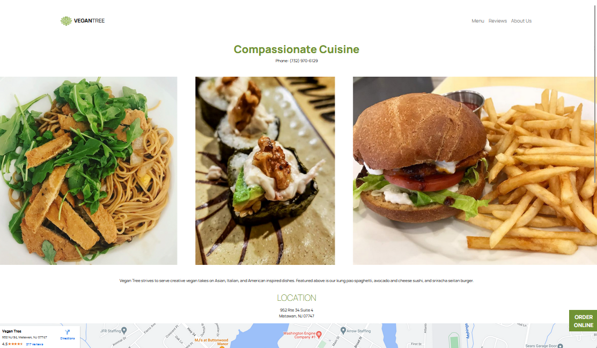

Responsive Redesign: Vegan Tree

Background
Vegan Tree is a resturant located in New Jersey that serves creative vegan Asian, Italian, and American inspired
dishes.
Though their is food delicious, their website is dated and confusing. As part of a project for
CSCI 1300 with Prof. Jeff Huang, the homepage was redesigned to
be
more usable, acessible, adaptive, and aethetically pleasing.

current homepage for Vegan Tree, click the preview to view the
actual site
Identifying Usability Problems
The general problems of usabiliy, efficiency, memorability, and accessiblity for the home page were noted below.
Since the navigation bar is included on the home page, some related issues address other pages.
General Problems
- The two images placed on top of each other makes both images unclear and unenticing
- "Order Online" shows up three times in the page, but lead to different pages
- The blue "Order Online" buttons are non functional as clicking them does the same thing as clicking anywhere
else on the image
- There are too many unncessary options in the navigation bar, for example there are no images in the "Gallery"
page
- The address and phone number appear twice right on top of each other
- The header logo is plain and does not stand out
- There is generally not much information on the home page
- When the window is resized on desktop, nothing adapts and horizontal scrolling is needed to view everything
- Mobile version is inconsistent with desktop version and has no pictures
Accessibility Problems
- WAVE accurately idefited that the footer text at the bottom of the page is very low contrast and difficult to
read
- Though there is alt text on all images, they are non descriptive for example saying "slideshow" and not
describing the image or writing
out the text on the image. This is something that WAVE is unable to identify as an issue.
- There are 0 ARIA elements on the page
Visual Redesign
In general, the website is very inefficient since there are many pages with not much content. Because of this, I
want to combine the home page
with the location page to make the overall site easier to navigate and remove repeitive information.
Low-fidelity Wireframing
Visual Design Style Guide
High-fidelity Prototype
figma link
here
Responsive Redesign

Redesigned page, click the preview to view the actual site